Installing and using Windows modules
Windows module pack
The Puppet Forge is an online community of Puppet modules submitted by Puppet and community members. The Forge makes it easier for you to manage Puppet and can save you time by using pre-written modules, rather than writing your own. In addition to being rated by the community, modules in the Forge can be Puppet Approved or Puppet Supported. The major difference is that Approved modules are not available for Puppet Enterprise support services, but are still tested and adhere to a standard for style and quality.
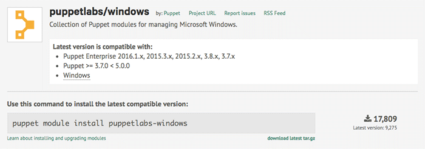
The Windows module pack includes several Windows compatible modules that help you complete common specific tasks. You can find more Windows modules by searching the Forge. Only the modules by Puppet are supported with Puppet Enterprise. The rest have been reviewed and recommended by Puppet but are not eligible for commercial support.
The Windows module pack enables the following:
- Read, create, and write registry keys with
registry. - Interact with PowerShell through the Puppet DSL with
powershell. - Manage Windows PowerShell DSC (Desired State Configuration) resources using
dsc. - Reboot Windows as part of management as necessary through
reboot. - Enforce fine-grained access control permissions using
acl. - Manage Windows Server Update Service configs on client nodes
wsus_client. - Install or remove Windows features with
windowsfeature. - Download files for use during management via
download_file. - Build IIS sites and virtual applications with
iis. - Install packages with
chocolatey. - Manage environment variables with
windows_env.
This guide covers creating a managed permission with ACL, creating managed registry keys and values with registry, and installing and creating your own packages with chocolatey.
Prerequisites
Before you install and begin working with the Windows pack of modules, you should have installed Puppet Enterprise.
Install the Windows module pack
These steps show you how to install the module pack locally, but you can also install it on the Puppet master and pluginsync will push the module pack to all of your nodes.
-
On your Windows Start page, click Start Command Prompt with Puppet.
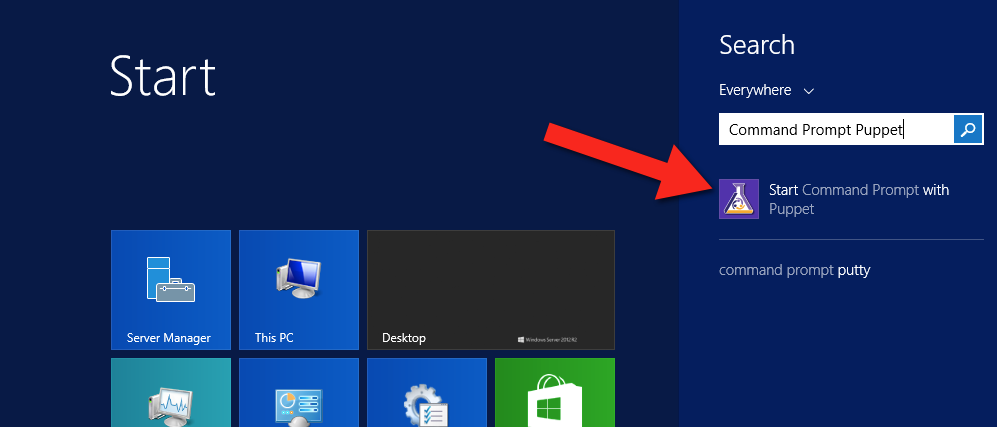
-
To list modules that you currently have installed, type
puppet module listin your Command Prompt window. If you’re just getting started, you likely have no modules installed yet.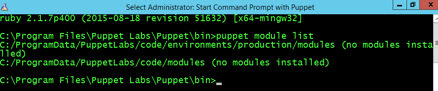
-
Next, to install the
puppetlabs/windowsmodule pack, typepuppet module install puppetlabs/windows. Notice that you get a nice output of everything that’s installed.C:\>puppet module install puppetlabs/windows Notice: Preparing to install into C:/ProgramData/PuppetLabs/code/environments/production/modules ... Notice: Downloading from https://forgeapi.puppetlabs.com ... Notice: Installing -- do not interrupt ... C:/ProgramData/PuppetLabs/code/environments/production/modules └─┬ puppetlabs-windows (v2.1.0) ├─┬ chocolatey-chocolatey (v1.2.0) │ └── badgerious-windows_env (v2.2.2) ├── puppet-download_file (v1.2.1) ├── puppet-iis (v1.4.1) ├── puppet-windowsfeature (v1.1.0) ├── puppetlabs-acl (v1.1.1) ├── puppetlabs-powershell (v1.0.5) ├── puppetlabs-reboot (v1.2.0) ├─┬ puppetlabs-registry (v1.1.2) │ └── puppetlabs-stdlib (v4.9.0) └── puppetlabs-wsus_client (v1.0.0)
Task 1: Manage permissions with acl
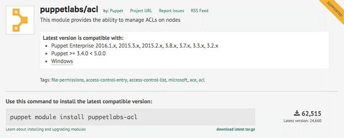
The puppetlabs-acl module helps you manage access control lists (ACLs), which provide a way to interact with permissions for the Windows file system. This module enables you to set basic permissions up to very advanced permissions using SIDs (Security Identifiers) with an access mask, inheritance, and propagation strategies. First, you’ll start with querying some existing permissions.
Discovery
ACL is a custom type and provider, so you can use puppet resource to look at existing file and folder permissions. For some types, you can use the command puppet resource <TYPE NAME> to get all instances of that type. However, there could be thousands of ACLs on a Windows system, so it’s best to specify the folder you want to review the types in. Here, check c:\Users to see what permissions it contains.
In the command prompt, type puppet resource acl c:\Users.
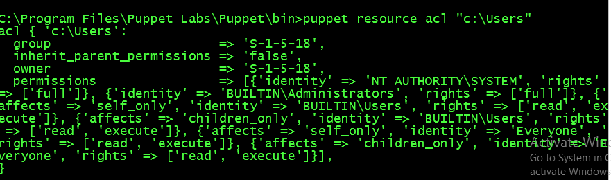
You can clean that output up just a little, as follows:
acl { 'c:\Users':
inherit_parent_permissions => 'false',
permissions => [
{identity => 'SYSTEM', rights=> ['full']},
{identity => 'Administrators', rights => ['full']},
{identity => 'Users', rights => ['read', 'execute'], affects => 'self_only'},
{identity => 'Users', rights => ['read', 'execute'], affects => 'children_only'},
{identity => 'Everyone', rights => ['read', 'execute'], affects => 'self_only'},
{identity => 'Everyone', rights => ['read', 'execute'], affects => 'children_only'}
],
}
As you can see, this particular folder does not inherit permissions from its parent folder; instead, it sets its own permissions and determines how child files and folders inherit the permissions set here.
-
{'identity' => 'SYSTEM', 'rights'=> ['full']}states that the “SYSTEM” user will have full rights to this folder, and by default all children and grandchildren files and folders (as these are the same defaults when creating permissions in Windows). -
{'identity' => 'Users', 'rights' => ['read', 'execute'], 'affects' => 'self_only'}gives read and execute permissions to Users but only on the current directory. -
{'identity' => 'Everyone', 'rights' => ['read', 'execute'], 'affects' => 'children_only'}gives read and execute permissions to everyone, but only on subfolders and files.
Note: You will likely see what appears to be the same permission for a user/group twice (both “Users” and “Everyone” above), where one affects only the folder itself and the other is about children only. They are in fact different permissions.
Create a Puppet managed permission
-
Run this code to create your first Puppet managed permission. Then, save it as
perms.pp.file{'c:/tempperms': ensure => directory, } # By default, the acl will create an implicit relationship to any # file resources it finds that match the location. acl {'c:/tempperms': permissions => [ {identity => 'Administrators', rights => ['full']}, {identity => 'Users', rights => ['read','execute']} ], }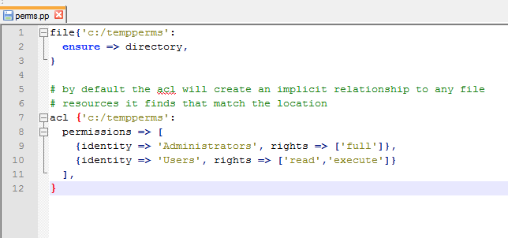
-
To validate your manifest, at the command prompt, type
puppet parser validate c:\path\to\perms.pp. If the parser returns nothing, it means validation passed.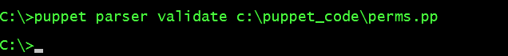
-
To apply the manifest, type
puppet apply c:\path\to\perms.pp. Your output should look similar to the output below.Notice: Compiled catalog for win2012r2x64 in environment production in 0.12 seconds Notice: /Stage[main]/Main/File[c:/tempperms]/ensure: created Notice: /Stage[main]/Main/Acl[c:/tempperms]/permissions: permissions changed [ ] to [ { identity => 'BUILTIN\Administrators', rights => ["full"] }, { identity => 'BUILTIN\Users', rights => ["read", "execute"] } ] Notice: Applied catalog in 0.05 seconds -
Review the permissions in your Windows UI. In Windows Explorer, right-click tempperms and click Properties. Then, click the Security tab. It should appear similar to the image below.
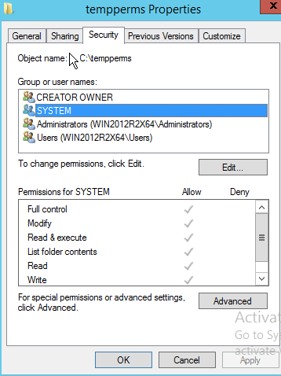
-
Optional: It might appear that you have more permissions than you were hoping for here. This is because by default Windows inherits parent permissions. In this case, you might not want to do that. Adjust the
aclresource to not inherit parent permissions by changing theperms.ppfile to look like the below by addinginherit_parent_permissions => false.acl {'c:/tempperms': inherit_parent_permissions => false, permissions => [ {identity => 'Administrators', rights => ['full']}, {identity => 'Users', rights => ['read','execute']} ], } -
Save the file, and return to the command prompt to run
puppet parser validate c:\path\to\perms.ppagain. -
When it validates, run
puppet apply c:\path\to\perms.pp.You should get output similar to the following:
C:\>puppet apply c:\puppet_code\perms.pp Notice: Compiled catalog for win2012r2x64 in environment production in 0.08 seconds Notice: /Stage[main]/Main/Acl[c:/tempperms]/inherit_parent_permissions: inherit_ parent_permissions changed 'true' to 'false' Notice: Applied catalog in 0.02 seconds -
To check the permissions again, type
icacls c:\tempperms. The command,icacls, is specifically for displaying and modifying ACLs.The output should be similar to the following:C:\>icacls c:\tempperms c:\tempperms BUILTIN\Administrators:(OI)(CI)(F) BUILTIN\Users:(OI)(CI)(RX) NT AUTHORITY\SYSTEM:(OI)(CI)(F) BUILTIN\Users:(CI)(AD) CREATOR OWNER:(OI)(CI)(IO)(F) Successfully processed 1 files; Failed processing 0 filesThe output shows each permission, followed by a list of specific rights in parentheses. This output shows there are more permissions than you specified in
perms.pp. Puppet will happily manage permissions next to unmanaged or existing permissions. In the case of removing inheritance, by default Windows copies those existing inherited permissions (or Access Control Entries, ACEs) over to the existing ACL so you have some more permissions that you might not want. -
Remove the extra permissions, so that only the permissions you’ve specified are on the folder. To do this, in your
perms.ppsetpurge => trueas follows:acl {'c:/tempperms': inherit_parent_permissions => false, purge => true, permissions => [ {identity => 'Administrators', rights => ['full']}, {identity => 'Users', rights => ['read','execute']} ], } -
Run the parser command as you have before. If it still returns no errors, then you can apply the change.
-
To apply the change, type
puppet apply c:\path\to\perms.pp. The output should be similar to below:C:\>puppet apply c:\puppet_code\perms.pp Notice: Compiled catalog for win2012r2x64 in environment production in 0.08 seco nds Notice: /Stage[main]/Main/Acl[c:/tempperms]/permissions: permissions changed [ { identity => 'BUILTIN\Administrators', rights => ["full"] }, { identity => 'BUILTIN\Users', rights => ["read", "execute"] }, { identity => 'NT AUTHORITY\SYSTEM', rights => ["full"] }, { identity => 'BUILTIN\Users', rights => ["mask_specific"], mask => '4', child_types => 'containers' }, { identity => 'CREATOR OWNER', rights => ["full"], affects => 'children_only' } ] to [ { identity => 'BUILTIN\Administrators', rights => ["full"] }, { identity => 'BUILTIN\Users', rights => ["read", "execute"] } ] Notice: Applied catalog in 0.05 secondsPuppet outputs a notice as it is removing each of the permissions.
-
Take a look at the output of
icaclsagain. Typeicacls c:\tempperms.c:\>icacls c:\tempperms c:\tempperms BUILTIN\Administrators:(OI)(CI)(F) BUILTIN\Users:(OI)(CI)(RX) Successfully processed 1 files; Failed processing 0 filesNow the permissions have been set up for this directory. You can get into more advanced permission scenarios if you read the usage scenarios on this module’s Puppet Forge page. You can also read an in-depth blog post about ACLs on the Puppet blog.
Task 2: Create Puppet managed registry keys with registry
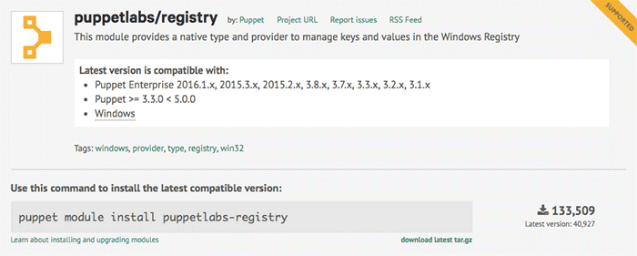
Eventually, you will likely need to use the registry to access and set highly available settings, among other things. The puppetlabs-registry module, which is also a Puppet Supported Module enables you to set both registry keys and values.
Discovery
puppetlabs-registry is a custom type and provider, so you can use puppet resource to look at existing registry settings. It is also somewhat limited, like the acl module in that it is restricted to only what is specified. Specify HKLM\Software\Microsoft\Windows and see what you get.
Type puppet resource registry_key 'HKLM\Software\Microsoft\Windows'.
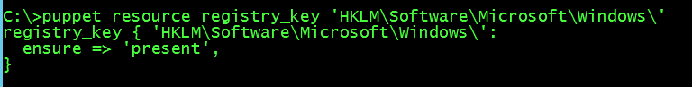
Not that interesting, but now take a look at a registry value.
Type puppet resource registry_value 'HKLM\SYSTEM\CurrentControlSet\Services\BITS\DisplayName':
registry_value { 'HKLM\SYSTEM\CurrentControlSet\Services\BITS\DisplayName':
ensure => 'present',
data => ['Background Intelligent Transfer Service'],
type => 'string',
}
That’s a bit more interesting than a registry key. Keys are like file paths (directories) and values are like files that can have data and be of different types.
Exercise
-
Create your first Puppet managed registry keys and values:
registry_key { 'HKLM\Software\zTemporaryPuppet': ensure => present, } # By default the registry creates an implicit relationship to any file # resources it finds that match the location. registry_value {'HKLM\Software\zTemporaryPuppet\StringValue': ensure => 'present', data => 'This is a custom value.', type => 'string', } #forcing a 32-bit registry view; watch where this is created: registry_key { '32:HKLM\Software\zTemporaryPuppet': ensure => present, } registry_value {'32:HKLM\Software\zTemporaryPuppet\StringValue': ensure => 'present', data => 'This is a custom 32-bit value.', type => 'expand', } -
Save the file as
registry.pp. -
Validate the manifest. In the command prompt, type
puppet parser validate c:\path\to\registry.pp. If the parser returns nothing, it means validation passed. -
Now, apply the manifest by typing
puppet apply c:\path\to\registry.pp. Your output should look similar to below.Notice: Compiled catalog for win2012r2x64 in environment production in 0.11 seco nds Notice: /Stage[main]/Main/Registry_key[HKLM\Software\zTemporaryPuppet]/ensure: c reated Notice: /Stage[main]/Main/Registry_value[HKLM\Software\zTemporaryPuppet\StringVa lue]/ensure: created Notice: /Stage[main]/Main/Registry_key[32:HKLM\Software\zTemporaryPuppet]/ensure : created Notice: /Stage[main]/Main/Registry_value[32:HKLM\Software\zTemporaryPuppet\Strin gValue]/ensure: created Notice: Applied catalog in 0.03 seconds -
Next, inspect the registry and see what you have. Press Start + R, then type
regeditand press Enter. Once the Registry Editor opens, find your keys underHKEY_LOCAL_MACHINE.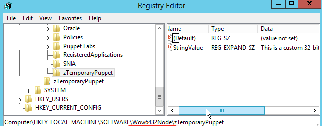
Note that the 32-bit keys were created under the 32-bit section of Wow6432Node for Software.
-
Apply the manifest again by typing,
puppet apply c:\path\to\registry.pp.Notice: Compiled catalog for win2012r2x64 in environment production in 0.11 seconds Notice: Applied catalog in 0.02 seconds -
Nothing changed, so there is no work for Puppet to do. In Registry Editor, change the data. Select
HKLM\Sofware\zTemporaryPuppetand in the right box, double-clickStringValue. Edit the value data, and click OK.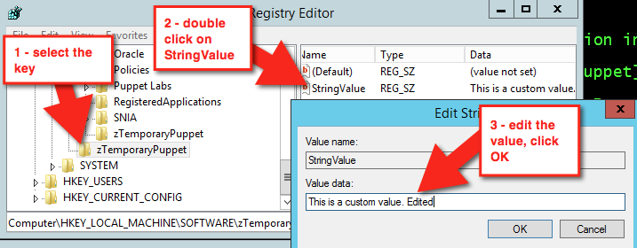
This time, changes have been made, so typing
puppet apply c:\path\to\registry.ppresults in a different output.Notice: Compiled catalog for win2012r2x64 in environment production in 0.11 seconds Notice: /Stage[main]/Main/Registry_value[HKLM\Software\zTemporaryPuppet\StringValue]/data: data changed 'This is a custom value. Edited' to 'This is a custom value.' Notice: Applied catalog in 0.03 secondsPuppet automatically corrects the configuration drift.
-
Next, clean up and remove the keys and values. Make your
registry.ppfile look like the below:registry_key { 'HKLM\Software\zTemporaryPuppet': ensure => absent, } #forcing a 32 bit registry view, watch where this is created registry_key { '32:HKLM\Software\zTemporaryPuppet': ensure => absent, } -
Validate it with
puppet parser validate c:\path\to\registry.ppand apply it again withpuppet apply c:\path\to\registry.pp.Notice: Compiled catalog for win2012r2x64 in environment production in 0.06 seconds Notice: /Stage[main]/Main/Registry_key[HKLM\Software\zTemporaryPuppet]/ensure: removed Notice: /Stage[main]/Main/Registry_key[32:HKLM\Software\zTemporaryPuppet]/ensure : removed Notice: Applied catalog in 0.02 secondsRefresh the view in your Registry Editor. The values are gone.
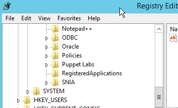
Real-world usage
Here’s a real world example that disables error reporting:
class puppetconf::disable_error_reporting {
registry_value { 'HKEY_LOCAL_MACHINE\SOFTWARE\Microsoft\Windows\Windows Error Reporting\ForceQueue':
type => dword,
data => '1',
}
registry_value { 'HKEY_LOCAL_MACHINE\SOFTWARE\Microsoft\Windows\Windows Error Reporting\DontShowUI':
type => dword,
data => '1',
}
registry_value { 'HKEY_LOCAL_MACHINE\SOFTWARE\Microsoft\Windows\Windows Error Reporting\DontSendAdditionalData':
type => dword,
data => '1',
}
registry_key { 'HKEY_LOCAL_MACHINE\SOFTWARE\Microsoft\Windows\Windows Error Reporting\Consent':
ensure => present,
}
registry_value { 'HKEY_LOCAL_MACHINE\SOFTWARE\Microsoft\Windows\Windows Error Reporting\Consent\DefaultConsent':
type => dword,
data => '2',
}
}
Want more info about the registry module?
Read the blog post about the re-introduction of the registry module, “Puppet works on Windows?” post, view the “Getting Started with Puppet on Windows” presentation from PuppetConf 2014 by Josh Cooper, and the “Workshop: Puppet for Windows Users” from PuppetConf 2014 by Ethan Brown. You can also see a reference and examples in the documentation of the module on the Forge.
Task 3: Create, install and repackage packages with chocolatey
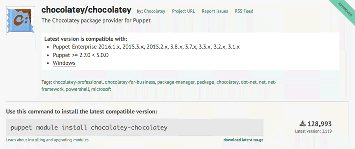
Chocolatey is a package manager for Windows that is similar in design and execution to package managers on non-Windows systems. The chocolatey module is a Puppet Approved Module, so it’s not elligible for Puppet Enterprise support services. The module has the capability to intall and configure Chocolatey itself, and then manage software on Windows with Chocolatey packages.
Discovery
Chocolatey has a custom provider for the package resource type, so you can use puppet resource to view existing packages.
Type puppet resource package --param provider | more. The additional provider parameter in this command outputs all types of installed packages that are detected by multiple providers.
Install Chocolatey
You are going to install Chocolatey (choco.exe) itself. You can do this following the instructions on Chocolatey’s home page, or you can use the module to ensure Chocolatey is installed.
-
Create a new manifest in the
chocolateymodule calledchocolatey.ppwith the following contents:include chocolatey -
Validate the manifest by typing
puppet parser validate c:\path\to\chocolatey.ppin the command prompt. If the parser returns nothing, it means validation passed. -
Now apply the manifest with
puppet apply c:\path\to\chocolatey.pp. Your output should look similar to the below.Notice: Compiled catalog for win2012r2x64 in environment production in 0.58 seconds Notice: /Stage[main]/Chocolatey::Install/Windows_env[chocolatey_PATH_env]/ensure : created Notice: /Stage[main]/Chocolatey::Install/Windows_env[chocolatey_ChocolateyInstal l_env]/ensure: created Notice: /Stage[main]/Chocolatey::Install/Exec[install_chocolatey_official]/retur ns: executed successfully Notice: /Stage[main]/Chocolatey::Install/Exec[install_chocolatey_official]: Trig gered 'refresh' from 2 events Notice: Finished catalog run in 13.22 secondsIn a production scenario, you’re likely to have a Chocolatey.nupkg file somewhere internal. In cases like that, you can use the internal nupkg for Chocolatey installation:
class {'chocolatey': chocolatey_download_url => 'https://internalurl/to/chocolatey.nupkg', use_7zip => false, log_output => true, }
Install a package
Normally, when installing packages you copy them locally first, make any required changes to bring everything they download to an internal location, repackage the package with the edits, and/or build your own packages to host on your internal package repository (feed). For this exercise, however, you directly install a portable Notepad++ from Chocolatey’s community feed. The Notepad++ Commandline package is portable and shouldn’t greatly effect an existing system.
-
Update the manifest (
chocolatey.pp) with the following contents:package {'notepadplusplus.commandline': ensure => installed, provider => chocolatey, } -
Validate the manifest by typing
puppet parser validate c:\path\to\chocolatey.ppin the command prompt. If the parser returns nothing, it means validation passed. -
Now, apply the manifest with
puppet apply c:\path\to\chocolatey.pp. Your output should look similar to below.Notice: Compiled catalog for win2012r2x64 in environment production in 0.75 seconds Notice: /Stage[main]/Main/Package[notepadplusplus.commandline]/ensure: created Notice: Applied catalog in 15.51 secondsIf you want to use this package for a production scenario, you need an internal custom feed. This is simple to set up with the
chocolatey_servermodule. You could also use Sonatype Nexus, Artifactory, or a CIFS share if you want to host packages with a non-Windows option, or you can use anything on Windows that exposes a NuGet OData feed (Nuget is the packaging infrastructure that Chocolatey uses). See the How To Host Feed page of thechocolateywiki for more in-depth information. You could also store packages on your Puppet master and use a file resource to verify they are in a specific local directory prior to ensuring the packages.
Copy an existing package and make it internal (repackaging packages)
Chocolatey’s community feed has quite a few packages but they are geared towards community and use the internet for downloading from official distribution sites. However, they are attractive as they have everything necessary to install a piece of software on your machine. Through the repackaging process, by which you take a community package and bring all of the bits internal and/or embed them into the pacakge, you can completely internalize a package to host on an internal Chocolatey/NuGet repository. This gives you complete control over a package and removes the aforementioned production trust and control issues.
To make the existing package local, use these steps.
-
Download the package from Chocolatey’s community feed by going to the package page and clicking the download link.
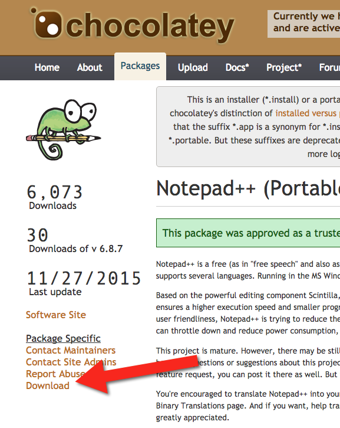
-
Rename the downloaded file to end with
.zipand unpack the file as a regular archive.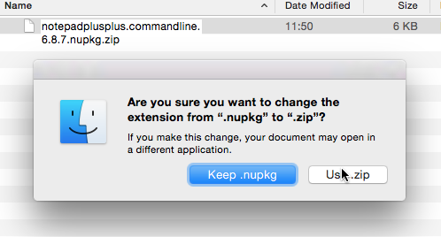
-
Delete the
_relsandpackagefolders and the[Content_Types].xmlfile. These are created duringchoco packand should not be included, as they will be regenerated (and their existence leads to issues).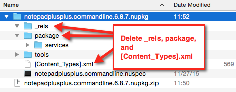
-
Next, open
tools\chocolateyInstall.ps1.Install-ChocolateyZipPackage 'notepadplusplus.commandline' 'https://notepad-plus-plus.org/repository/6.x/6.8.7/npp.6.8.7.bin.zip' "$(Split-Path -parent $MyInvocation.MyCommand.Definition)" -
Download the zip file and place it in the tools folder of the package.
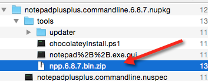
-
Next, edit
chocolateyInstall.ps1to point to this embedded file instead of reaching out to the internet (if the size of the file is over 50MB, you might want to put it on a file share somewhere internally for better performance).$toolsDir = "$(Split-Path -parent $MyInvocation.MyCommand.Definition)" Install-ChocolateyZipPackage 'notepadplusplus.commandline' "$toolsDir\npp.6.8.7.bin.zip" "$toolsDir"The double quotes allow for string interpolation (meaning variables get interpreted instead of taken literally).
-
Next, open the
*.nuspecfile to view its contents and make any necessary changes.<?xml version="1.0"?> <package xmlns="http://schemas.microsoft.com/packaging/2010/07/nuspec.xsd"> <metadata> <id>notepadplusplus.commandline</id> <version>6.8.7</version> <title>Notepad++ (Portable, CommandLine)</title> <authors>Don Ho</authors> <owners>Rob Reynolds</owners> <projectUrl>https://notepad-plus-plus.org/</projectUrl> <iconUrl>https://cdn.rawgit.com/ferventcoder/chocolatey-packages/02c21bebe5abb495a56747cbb9b4b5415c933fc0/icons/notepadplusplus.png</iconUrl> <requireLicenseAcceptance>false</requireLicenseAcceptance> <description>Notepad++ is a ... </description> <summary>Notepad++ is a free (as in "free speech" and also as in "free beer") source code editor and Notepad replacement that supports several languages. </summary> <tags>notepad notepadplusplus notepad-plus-plus</tags> </metadata> </package>Some organizations will change the version field to denote this is an edited internal package, for example changing
6.8.7to6.8.7.20151202. For now, this is not necessary.Now you can navigate via the command line to the folder with the
.nuspecfile (from a Windows machine unless you’ve installed Mono and built choco.exe from source) and usechoco pack. You can also be more specific and typechoco pack path\to\notepadplusplus.commandline.nuspec. The output should be similar to below.Attempting to build package from 'notepadplusplus.commandline.nuspec'. Successfully created package 'notepadplusplus.commandline.6.8.7.nupkg'Normally you test on a system to ensure that the package you just built is good prior to pushing the package (just the *.nupkg) to your internal repository. This can be done by using
choco.exeon a test system to install (choco install notepadplusplus.commandline -source %cd%- change%cd%to$pwdin PowerShell.exe) and uninstall (choco uninstall notepadplusplus.commandline). Another method of testing is to run the manifest pointed to a local source folder, which is what you are going to do. -
Create
c:\packagesand copy the resulting package file (notepadplusplus.commandline.6.8.7.nupkg) into it.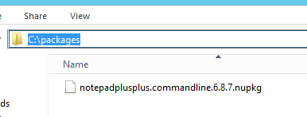
This won’t actually install on this system since you just installed the same version from Chocolatey’s community feed. So you need to remove the existing package first. To remove it, edit your
chocolatey.ppto set the package to absent.package {'notepadplusplus.commandline': ensure => absent, provider => chocolatey, } -
Validate the manifest with
puppet parser validate path\to\chocolatey.pp. Apply the manifest to ensure the changepuppet apply c:\path\to\chocolatey.pp.Notice: Compiled catalog for win2012r2x64 in environment production in 1.03 seconds Notice: /Stage[main]/Main/Package[notepadplusplus.commandline]/ensure: removed Notice: Applied catalog in 12.20 secondsYou can validate that the package has been removed by checking for it in the package install location or by using
choco list -lo.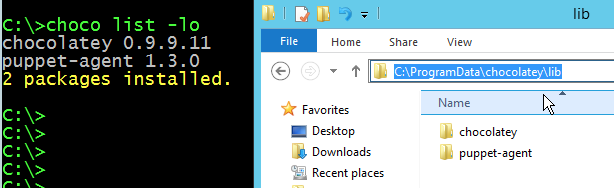
-
Update the manifest (
chocolatey.pp) to use the custom package.package {'notepadplusplus.commandline': ensure => latest, provider => chocolatey, source => 'c:\packages', } -
Validate the manifest with the parser and then apply it again. You will see Puppet creating the new install in the output.
Notice: Compiled catalog for win2012r2x64 in environment production in 0.79 seconds Notice: /Stage[main]/Main/Package[notepadplusplus.commandline]/ensure: created Notice: Applied catalog in 14.78 seconds -
In an earlier step, you added a
*.zipfile to the package, so that you can inspect it and be sure the custom package was installed. Navigate toC:\ProgramData\chocolatey\lib\notepadplusplus.commandline\tools(if you have a default install location for Chocolatey) and see if you can find the*.zipfile.
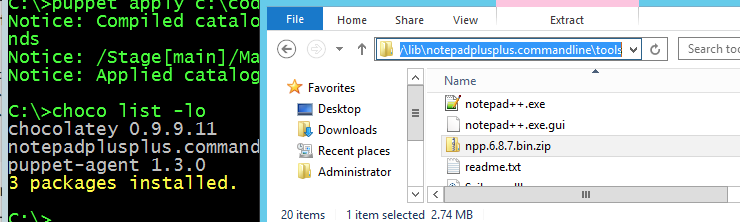
You can also validate the chocolateyInstall.ps1 by opening and viewing it to see that it is the custom file you changed.
Create a package
Creating your own packages is, for some system administrators, surprisingly simple compared to other packaging standards.
Ensure you have at least Chocolatey CLI (choco.exe) version 0.9.9.11 or greater for this next part.
-
From the command prompt, enter
choco new -hto see a help menu of what the available options are. -
Next, use
choco new vagrantto create a package named ‘vagrant’. The output should be similar to the following:Creating a new package specification at C:\temppackages\vagrant Generating template to a file at 'C:\temppackages\vagrant\vagrant.nuspec' Generating template to a file at 'C:\temppackages\vagrant\tools\chocolateyinstall.ps1' Generating template to a file at 'C:\temppackages\vagrant\tools\chocolateyuninstall.ps1' Generating template to a file at 'C:\temppackages\vagrant\tools\ReadMe.md' Successfully generated vagrant package specification files at 'C:\temppackages\vagrant'It comes with some files already templated for you to fill out (you can also create your own custom templates for later use).
-
Open
vagrant.nuspec, and edit it to look like this:<?xml version="1.0" encoding="utf-8"?> <package xmlns="http://schemas.microsoft.com/packaging/2015/06/nuspec.xsd"> <metadata> <id>vagrant</id> <title>Vagrant (Install)</title> <version>1.8.4</version> <authors>HashiCorp</authors> <owners>my company</owners> <description>Vagrant - Development environments made easy.</description> </metadata> <files> <file src="tools\**" target="tools" /> </files> </package>Unless you are sharing with the world, you don’t need most of what is in the nuspec template file, so only required items are included above. The important thing you should do when creating a package is match the version of the package in this nusepec file to the version of the underlying software as closely as possible. You will package the most recent version of Vagrant into this package you’ve created, so the version of the package in the nuspec file should match. In this example, Vagrant 1.8.4 is being packaged. More on versioning.
-
Open
chocolateyInstall.ps1and edit it to look like the following:$ErrorActionPreference = 'Stop'; $packageName= 'vagrant' $toolsDir = "$(Split-Path -parent $MyInvocation.MyCommand.Definition)" $fileLocation = Join-Path $toolsDir 'vagrant_1.8.4.msi' $packageArgs = @{ packageName = $packageName fileType = 'msi' file = $fileLocation silentArgs = "/qn /norestart" validExitCodes= @(0, 3010, 1641) } Install-ChocolateyInstallPackage @packageArgsNote: The above is
Install-ChocolateyINSTALLPackage, not to be confused withInstall-ChocolateyPackage. The names are very close to each other, however the latter will also download software from a URI (URL, ftp, file) which is not necessary for this example. -
Delete the
ReadMe.mdandchocolateyUninstall.ps1files. Download Vagrant and move it to the tools folder of the package.Note: Normally if a package is over 100MB, it is recommended to move the software installer/archive to a share drive and point to it instead. For this example, you will just bundle it as is.
-
Now pack it up by using
choco pack. Copy the newvagrant.1.8.4.nupkgfile toc:\packages. -
Open the manifest, and add the new package you just created. Your
chocolatey.ppfile should look like the below.package {'vagrant': ensure => installed, provider => chocolatey, source => 'c:\packages', } -
Save the file and make sure to validate with the Puppet parser.
-
Then use
puppet apply path\to\chocolatey.ppto run the manifest.Notice: Compiled catalog for win2012r2x64 in environment production in 0.70 seconds Notice: /Stage[main]/Main/Package[vagrant]/ensure: created Notice: Applied catalog in 31.51 seconds -
Open Control Panel, Programs and Features and take a look — Vagrant is installed!
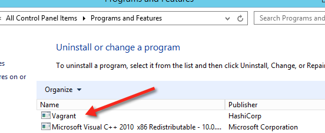
Uninstalling
To verify that the choco autoUninstaller feature is turned on, use choco feature to list the features and their current state. If you’re using include chocolatey or class chocolatey to ensure Chocolatey is installed, the configuration will be applied automatically (unless you have explicitly disabled it). Also, starting in Chocolatey version 0.9.10, it is enabled by default.
-
If you see
autoUninstaller - [Disabled], you need to enable it. To do this, in the command prompt, typechoco feature enable -n autoUninstaller. You should see a similar success message:Enabled autoUninstaller -
To remove Vagrant, edit your
chocolatey.ppmanifest toensure => absent. Then save and validate the file.package {'vagrant': ensure => absent, provider => chocolatey, source => 'c:\packages', } -
Next, run
puppet apply path\to\chocolatey.ppto apply the manifest.Notice: Compiled catalog for win2012r2x64 in environment production in 0.75 seconds Notice: /Stage[main]/Main/Package[vagrant]/ensure: removed Notice: Applied catalog in 40.85 seconds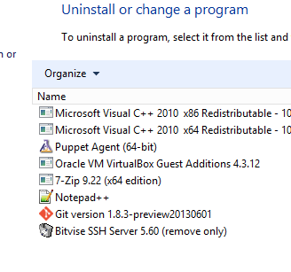
And it’s no longer installed!
Real-world usage
The following example ensures that Chocolatey, the Chocolatey Simple Server (an internal Chocolatey package repository), and some packages are installed. It requires the additional chocolatey/chocolatey_server module.
In c:\packages you must have packages for Chocolatey, Chocolatey.Server, RoundhousE, Launchy, and Git, as well as any of their dependencies.
case $operatingsystem {
'windows': {
Package {
provider => chocolatey,
source => 'C:\packages',
}
}
}
# include chocolatey
class {'chocolatey':
chocolatey_download_url => 'file:///C:/packages/chocolatey.0.9.9.11.nupkg',
use_7zip => false,
log_output => true,
}
# This contains the bits to install the custom server.
# include chocolatey_server
class {'chocolatey_server':
server_package_source => 'C:/packages',
}
package {'roundhouse':
ensure => '0.8.5.0',
}
package {'launchy':
ensure => installed,
install_options => ['-override', '-installArgs','"', '/VERYSILENT','/NORESTART','"'],
}
package {'git':
ensure => latest,
}
Want more Chocolatey?
You can learn more about Chocolatey by visiting Chocolatey.org, reading the documentation on GitHub, and by watching “Chocolatey and Puppet - Managing Your Windows Software Since 2011” from PuppetConf 2015 by Rob Reynolds. To learn specifically what the provider offers and have a reference of what is available, the module and documentation are on the Puppet Forge.